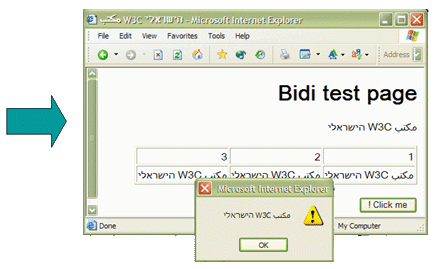
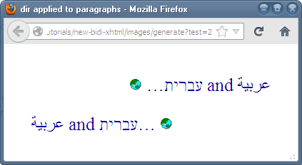
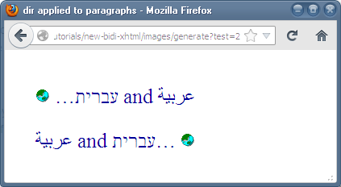

Intended audience:
XHTML/HTML coders (using editors or scripting), script developers (PHP, JSP, etc.), Web project managers, and anyone who needs to better understand how to markup up right-to-left text on a Web page.
How should I use the dir attribute and related markup to set text direction on structural elements in HTML?
The dir attribute is used to set the base direction of text for display. It is essential for enabling HTML in right-to-left scripts such as Arabic, Hebrew, Syriac, and Thaana. Numerous different languages are written with these scripts, including Arabic, Hebrew, Pashto, Persian, Sindhi, Syriac, Dhivehi, Urdu, Yiddish, etc.
This article looks at basic usage of the dir attribute for structural markup in HTML, at the document level and for elements like paragraphs, tables and forms. For handling bidirectional text with inline markup you should read the separate article, Inline markup and bidirectional text in HTML. It also describes some other elements and attributes related to direction.
If the overall document direction is right-to-left, add dir="rtl" to the html tag. (There is a workaround if you absolutely need to avoid Internet Explorer or Opera changing the browser chrome.)
Below the html tag, only use the dir attribute on structural elements where the base direction needs to change in order for the text to display correctly.
Support for the following HTML5 markup is increasing. Use dir="auto" on forms and inserted text in order to automatically detect the direction of content supplied at run-time. Consider using the dirname attribute on forms to send information about direction in addition to the usual form data.
Many examples in this document are shown as images to avoid problems for those with a browser that doesn't produce what was intended.
Click on the image to see how it looks in your browser, and to see the actual text.
Code samples containing Arabic and Hebrew text may be displayed in different ways depending on which editor is used. In this article right-to-left text in code samples is represented by UPPERCASE TRANSLATIONS, and left-to-right text by lowercase. All text in code samples reflects the direction of characters as stored in memory, rather than the displayed result. The original version of text in uppercase translations would be read from right-to-left.
To see the full source, click on the and view the source of the page that displays.
Before we start, we need to introduce an important concept.
In order for text to look right when an HTML page is displayed, we need to establish the directional context of that text. We will refer to that context as the base direction for the text.
It is fundamentally important to establish the appropriate base direction for the Unicode bidirectional algorithm to produce the expected ordering of the displayed text. Correct specification of the base direction also establishes a proper default alignment for the text.
In HTML the base direction is either set explicitly by the nearest parent element that uses the dir attribute, or, in the absence of such an attribute, the base direction is inherited from the default direction of the document, which is left-to-right (LTR).
Adding dir="rtl" to the html element will cause block elements and table columns to start on the
right and flow from right to left. All block elements in the document will inherit this setting unless the direction is explicitly overridden.
Note, however, that although the title element is supposed to inherit this directionality, and the HTML5 specification urges browsers to apply the title element's directionality to the title bar, at the time of writing browsers currently do not do so. See which browsers support this. On major browsers adding the Unicode characters U+202B (RLE) and U+202C (PDF) around the title text will order the text from right to left.
The illustration below shows what content looks like before (left) and after (right) the dir attribute is added to the html tag.
Language tags.
While you are declaring the directionality of the document in the html tag, don't forget to declare the
language of the document using the lang and/or xml:lang attributes (see Declaring language in HTML). However, do not make the mistake of assuming that language declarations indicate directionality, or vice versa! Even if a script tag is used in the language attribute value, this has no implication with regards to the directionality of the
text in the user agent. You must always declare the directionality using the dir attribute.
Note that in Internet Explorer and Opera, applying a right-to-left direction in the html or body tag will affect the user interface, too. On both of these browsers the scroll bar will appear to the left side of the window.
Also, when the direction is applied in the html tag JavaScript alert message boxes in Internet Explorer such as the one shown in the picture
below will be mirror imaged – note how the yellow icon on the JavaScript dialog
box appears on the right, and the logical order of the text, <arabic> W3C <hebrew>, is displayed from right to left (see which browsers do this).

This behavior does not occur in browsers such as Firefox, Safari or Chrome.
Some speakers of languages that use right-to-left scripts prefer the directionality of the user interface to be associated with
the desktop environment, not with the content of a particular document. Because of this, they may prefer not to declare the document directionality
on the html or body tag. To avoid this without tagging every block element in the document you could
add a div element that surrounds all the other content in the
document immediately inside the body element, and apply the dir attribute to that. The directionality will then be inherited by all other block elements in the
body of the document, but will not set off the changes to the browser chrome. If you do this, you must ensure that you add a dir attribute to the head element also, to cover its title element, attribute values, etc.
Use the dir attribute on a block element only when you need to change the base direction of content in that block. Do not use CSS (why).
The picture here shows two paragraphs in a right-to-left document. Both paragraphs are identical except for the addition of dir="ltr" in the second.

The most obvious difference is that the second paragraph is now left-aligned. However, note, in particular, that the relative positions of the items on each line flow in opposite directions, because the base direction has been changed. (On the other hand, the characters within each word still appear in the same direction. The ordering of characters within each word shown is determined by the Unicode bidirectional algorithm, not by the dir attribute. This is explained more fully in the article Inline markup and bidirectional text in HTML).
The following is an example of how to mark up a block element with a left-to-right base direction in a right-to-left document.
<blockquote dir="ltr" lang="en" cite="Romeo and Juliet (II, ii, 1-2)">But, soft! What light through yonder window breaks?
It is the east, and Juliet is the sun.</blockquote>
The dir attribute on a block element affects the alignment of its content on the page, as can be seen in the example in the previous section.
In some cases you want to keep the block of text aligned in the same way, regardless of the direction of its content, like this (which is in a left-to-right page):

To do so you could add an inline element, such as span (or bdi if supported), that surrounds all the content of the block element, and apply the dir attribute to that.
For instance, to reproduce the example shown just above, use the following code.
<p><span dir="rtl">ARABIC and HEBREW… <img src="globe.gif" alt="Small picture of a globe."></span></p>
<p>ARABIC and HEBREW… <img src="globe.gif" alt="Small picture of a globe."></p>
The dir attribute setting also affects the flow of columns in a table. The following picture shows a table in a
right-to-left document (ie. the html tag includes dir="rtl"). The content of the table cells is right-aligned, the flow of content in each cell is right-to-left, and the columns also run right-to-left.
In the table just below, the code dir="ltr" has been added to the table element, like this:
<table dir="ltr"> … </table>
Note how the order of columns has changed, how the contents of the cells are now left aligned (look at the numbers), and how the flow of words within each cell is now left-to-right (although the words themselves are still read, character by character, in the same direction).
What hasn't changed, however, is the alignment of the table itself within its containing block. It is still over to the right.
If, for some reason, you wanted to use markup (rather than styling) to make the table appear over on the left as well as reorder the columns (perhaps because you see the table as part of a left-to-right direction block), you would need to wrap it in something like a div element, and add
the dir="ltr" to that element to achieve that effect. See the third rendering of the table below, which is now left-aligned.
Note that we don't have to repeat the dir attribute on the table itself, but that the columns run left-to-right.
Having established the base direction at the html tag level, you do not need to use the dir attribute on lower level block elements unless you want to change the base direction for that element.
Unnecessary use of the dir attribute potentially creates unnecessary additional work for
page maintenance and also impacts bandwidth.
The Arabic page source code in the following example shows bad usage. The other dir attributes here are redundant if dir="rtl" has been
added to the html element – without them the Unicode bidi algorithm would create the same display.
NOTE! This section describes features introduced by HTML5 to address the needs of text whose direction is not known in advance. The basic features are supported by all major browsers except Microsoft Edge and Internet Explorer.
These features, when used as described below, don't cause harm on browsers that don't support them, but where browsers do they provide bidi support that isn't otherwise available using markup. Therefore, it makes sense to start using them now, so that as browser support improves your content will reap the benefit.
Many web applications with a right-to-left-language interface or a right-to-left-language data source need to display and/or accept as input both LTR and RTL data. The application often doesn't know, and cannot control, the direction of the data.
HTML5 added an auto value to the dir attribute that can help here. The auto value tells the browser to look at the first strongly typed character in the element and work out from that what the base direction of the element should be. If it's a Hebrew (or Arabic, etc.) character, the element will get a direction of rtl. If it's, say, a Latin character, the direction will be ltr.
There are some corner cases where this may not give the desired outcome, but in the vast majority of cases it should produce the expected result.
The auto value comes in handy for the scenarios described below.
An online book store that carries books in many languages needs to work with the original book titles regardless of the language of the user interface. Thus, a Hebrew or Arabic book title may appear in an English interface, and vice-versa (this problem is actually much more widespread in RTL pages). The direction of the title may be available as a separate attribute, but more likely it isn't.
In the following example we search for a Hebrew title, הצהחת קידוד תװי CSS, in an English user interface.
If nothing special has been done to the source code, you'll notice that (a) the word 'CSS' comes out in the wrong place (it should be on the left), and (b) the text remains left-aligned rather than over to the right. Perhaps even worse, the user experience of typing opposite-direction data can be quite awkward in some cases due to the cursor and punctuation jumping around during data entry and difficulty in selecting text.
Before HTML5, avoiding such problems required that the user set the direction of the field using browser-specific key sequences or context menus, or that the page use scripting and logic to estimate the data's direction – and use it in the many places where it is needed. Such logic is not easy to implement, since it requires the use of long tables of strong-RTL and/or strong-LTR characters, and becomes non-obvious when a string contains both.
Here's what we'd expect to see if we just add dir="auto" to the input tag.
Since the first strong character is right-to-left, the auto value causes the input field to be right-to-left too.
It is worth using this markup now if you are unable to provide an alternative way of applying direction to the input field. At least it will work for some users now, and later will work for all browsers. The same principle applies to other HTML5 features described in this article.
Both textarea and pre elements can contain more than one paragraph of text. The HTML5 spec says that if you use dir="auto" on these elements you will assign direction to each paragraph independently, according to the direction of the first strong character in that paragraph.
When you cause the browser to dynamically apply the right direction to text in a form field, either by using dir="auto", by using JavaScript, or even by using browser-specific keystrokes or context menus, that information used to be lost as soon as you select submit and send the data to the server.
The new dirname attribute in HTML5 allows you to pass that information to the server, so that it can be re-used when the text is displayed in another context.
The value of dirname can be whatever you want (but not empty). When it is set, the form passes the direction of the element to the server, using the name you have provided. So if the user switches the direction of the form entry field in the example above to RTL and enters مرحبا, then when the form is submitted, the submission body will look like this:
The directional information can then be used to apply the right direction to the text when it is displayed on another page.
This attribute can, of course, also be used to submit the direction of the input field when dir is set to rtl or ltr. This could be useful for a database that stores data in a variety of languages.
Applications often insert text into a page at run time by pulling information from a database or other location, be it via server-side scripting such as PHP, using AJAX, or some other method. Such text can be multilingual/multiscript, and the direction of the text may not be known in advance. Note that multiscript text is much more common in pages that are predominantly right-to-left than in other pages.
Such inserted text is commonly inline, and the auto value of the dir attribute and another element called bdi (also introduced in HTML5) play a useful role in handling such situations. Their use for inline markup is described in more detail in the article Inline markup and bidirectional text in HTML.
It is sometimes useful to insert block level content into a page and determine the direction as it is added. This could be useful, for example, in a forum where posts are in both Urdu and English, or where text in a single post is a mixture of Hebrew and English paragraphs. Simply add dir="auto" to the element that surrounds each post and the first strongly-typed character in the element will determine the direction of that element's content.
The HTML5 specification gives an example related to a chat session. Given the following markup:
<p dir=auto class="u1"><b><bdi>Student</bdi>:</b> How do you write "What's your name?" in Arabic?</p>
<p dir=auto class="u2"><b><bdi>Teacher</bdi>:</b> ما اسمك؟</p>
<p dir=auto class="u1"><b><bdi>Student</bdi>:</b> Thanks.</p>
<p dir=auto class="u2"><b><bdi>Teacher</bdi>:</b> That's written "شكرًا".</p>
<p dir=auto class="u2"><b><bdi>Teacher</bdi>:</b> Do you know how to write "Please"?</p>
<p dir=auto class="u1"><b><bdi>Student</bdi>:</b> "من فضلك", right?</p>
The browser will display the following:
Note how, when searching for the first strongly-typed character, the browser skips over text in a bdi element. It also skips text in script, style, and textarea elements, and any element with a dir attribute.
Note, also, how this approach is not foolproof: the final paragraph in this example is misinterpreted as being right-to-left text, since it begins with an Arabic character. This causes the line to be right-aligned and the text "right?" to be to the left of the Arabic text.
Browsers may allow users to set the base direction of form entry fields using key strokes. Having the right base direction set can significantly improve the user's experience, especially if the text they are inputting contains punctuation and numbers. Unfortunately, each browser has a different way of doing this. This section lists how to do it for some major desktop browsers.
In some cases you will need to set up your system for this to work. For example, for Internet Explorer you may need to install the Hebrew package and enable the Hebrew keyboard before this will work.
Chrome: Right-click on input or textarea elements to reveal the Writing Direction submenu. Choose either Right to Left or Left to Right. This sets the value of the element's dir attribute, which is then available to scripts.
Safari: Right-click on input or textarea elements to reveal the Paragraph Direction submenu. Choose either Right to Left or Left to Right. This sets the value of the element's dir attribute, which is then available to scripts.
Firefox: Set direction using the CTRL/CMD+SHIFT+X keyboard shortcut, which cycles through LTR and RTL. It does not set the value of the element's dir attribute, and is thus invisible to scripts.
Internet Explorer: Use CTRL+LEFT SHIFT for LTR and CTRL+RIGHT SHIFT for RTL. (These key combinations are also adopted for this purpose by most Microsoft products, e.g. Windows dialogs, Notepad and Word.) They set the value of the element's dir attribute, which is then available to scripts.